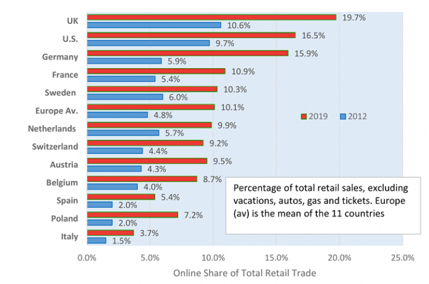

Customer Relation Management (CRM)
Customer relations management refers to strategies & software that enables an organisation to maximise its customer relations.
In its simplest form CRM might entail a simple reply to a received e-mail, acknowledging the receipt of said email and a brief reply about when the sender might expect a significant reply.
On forums or social media it might be a notification to inform the user of a reply to their posts/content.
It might entail a consumer being able to schedule a call back from an agent at a suitable time, a customer relations agent having a live chat, access to accounts or records to assist sales agents or customer relations staff. FAQ sections can direct the client to answers to the most common queries.
CRM might monitor and assign sales agents so that 2 agents are not contacting the same target, or automate sales processes to meet consumer’s needs. It might access which advertising campaigns are most effective with clients and assign personalised content to each users preferences. CRM can also manage data safely, or protect data by automatically backing up data to cloud services.
At higher levels it is typically associated with data management and analysis driving productivity and efficiency. Including AI suggestions based on previous data to drive growth, profits, brand recognition and reputation.
Some of the leading CRM solutions are provided by:
- Microsoft-Dynamics
- Zoho CRM
- Oracle CX
- Sage CRM
- Salesforce
Payments Systems
Payment systems are a vital part of a business’s planning. It permits the secure and speedy receipt of income from sales, and similarly in paying debts. With the advent of the World Wide Web e-commerce has boomed to become a significant share of numerous businesses planning.
In the US around 2011, e-commerce had grown to account for about 5% of retail sales. By 2020 this had peaked to 15% in part due to the pandemic. However, as the lockdown era has declined e-commerce still accounts for rough 13-14% of retail sales.
Below we can see a graph that shows the growth in online retail sales for several nations from 2012 compared with 2019, and this trend has been seen across the globe.

Completing transactions online is an important aspect for a business to consider. By providing multiple means of completing transactions a business can remove barriers for customers in completing transactions.
There are many providers to choose from and each has its own costs and benefits, again employing each one as part of your business plan reduces barriers for transactions to be completed.
You can setup an internet merchant account via your bank to process credit card payments on your own site. Third party providers include Merchant Accounts, Beanstream and InternetSecure. These services require an internet gateway service to verify information, transfer requests and authorise credit card payments.
- PayPal their online services permit credit card payments and bank transfer purchases. PayPal charges a percentage fee (1.9%-2.9%) and a standard fee (30 US cent) on each transaction.
- Square in addition to PayPal’s services can also provide its clients with a card reader for accepting payments in person. Their fees are 2.75% of every transaction. Square also provides an online store site where items or services can be listed and purchased.
- Stripe offers a service where you embed their form on your own site. It works across multiple devices and they charge 2.9% of the total transaction and 30 cent fee on each transaction.
- Amazon’s checkout service is again similar and also charge 2.9% of the total transaction and 30 cent fee on each transaction. This fee can reduce as sales increase above $3,000 a month. Amazon requires your client to setup an Amazon account and you are provided with their details thereafter: name, email & postal details.
- Sum up is a good alternative for tech adverse smaller retailers. This app pair your phone with a card reader and you simply enter the amount to be charged and the payment processor debits and credits accounts.
- Crypto-currency trading is another option, however, this is a relatively niche market and requires a tech savvy capacity to implement safely and securely.
Whilst there are numerous options to choose from, there are many people who feel uncomfortable trading online and as such you should still take advantage of potential viewers and facilitate their ability to trade with you. This can be as simple as providing an application form or referring them to larger stores that might stock your items. Finally having selected you payment processing portfolio, make sure to account for these costs in your pricing structure.
Supply Chain Management
“Supply chain management is the management of the flow of goods and services and includes all processes that transform raw materials into final products. It involves the active streamlining of a business's supply-side activities to maximize customer value and gain a competitive advantage in the marketplace.” (Fernando, 2022)
Effective supply chain management minimises costs, waste and time in delivering products from raw materials to consumers. Traditionally this system consists of 5 elements: Planning, Sourcing, Manufacturing, Delivery & Returns.
- Planning to acquire all resources and stages required to meet customer demand. Defining metrics to gauge the success and efficiency of meeting company and consumer goals.
- Sourcing all goods & services to create the product lines, or services. Managing the chain of orders, receipts, inventory and releasing payments. Improving relationships with suppliers is also a desirable outcome.
- Manufacturing requires organisation of raw materials, storage & production. Quality assurance is provided by monitoring and testing during the manufacturing phase.
- Delivery, coordinating the flow of incoming orders and other documentation to ensure the reliable delivery of goods or services in a timely order.
- Returns, a system to receive returned goods whether defective or unwanted and the impact on inventory as a result.
Effective advanced SCM uses data and trend analysis to identify potential problems, such as avoiding disappointing customers by anticipating stock shortages or surges in demand. Adjusting prices to reduce losses with seasonal or expiration dates as result of data analysis. Where products are produced on ordering goods, data analysis through SCM can provide precise details for completion of manufactured goods and delivery times.
Good supply chain management can be effective in pleasing consumers who are able to order goods and receive quality products on time. This improves customer satisfaction with the organisation and reduces bad exposure through potential poor quality goods or late deliveries.